The maple's leaves: which ones sag, how they sit in plates, and how to draw them bent
Task 117, 2026-11-26, branch room-light. Research and CPU prototypes only; nothing in src/ changed.
The scripts are in src/: leaf.py (the atlas's leaf as a mesh, and the bends), raster.py
(a small rasterizer with the game's leaf light), variants.py, shoot.py, chart.py,
lia_stats.py and this page's page.py. The leaf shape is the game's own atlas
(../branches/dump/atlas-shape.rgba), cut at alpha 0.5 as the shader cuts it.
In short.
(1) Measured Norway maple blades are mostly near level: in summer the top of the crown has the flattest blades
(median 15° from level, 86 % within 30°), and the middle and bottom are steeper (median 22-23°). So "the sagging leaves are at
the crown's edge" is not what the data show for summer. In autumn it changes: the top's blades turn steeper first, as they
age (median 22° in September, 42° in an October sample). The game's tree is an autumn tree, so steeper and sagging blades at the
top and outside fit it. Nobody measured how curved Norway maple blades are by position; for beech, sun leaves are more
curved (folded) than shade leaves.
(2) On a level shoot the lower leaf of a pair has the longer stalk and the larger blade (Weisse 1895, measured on Norway maple),
and long stalks (5-20 cm) let the blades spread into one layer. Placed that way and nudged apart, the prototype's blades overlap
10 % in plan, against 74 % for the game's present rule on the same branch.
(3) Draw a bent leaf as a small fan mesh that hugs the outline (21 vertices on the high tier), bent at startup into six template
shapes; each leaf picks a template, an amount and a twist, packed into a field the card already has. The fan also cuts the alpha-cut
area: the blade covers 45 % of it against 27 % of the card. The standard tier gets a card cut in four rows (10 vertices), bent along
its midrib only; phones keep the flat card.
1. The photos
tartu-maple-1, the crown's edge from below, autumn. Plates of 2-6
leaves at the shoot tips, sky between them. Many blades are seen edge-on or steep, lobes hanging: from below, a level blade is seen
whole, so these are tilted or bent.tartu-maple-1, higher in the crown. The plates read as layers;
most blades are seen nearly whole (near level), a few on edge.tartu-maple-1, inside the crown: a closed layer of blades
over each branch, very little sky.
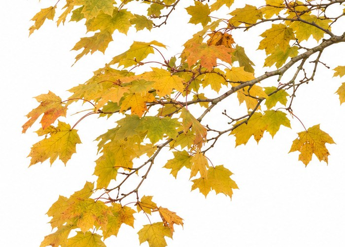
ai-branch-canopy (made, not photographed). From the side: long red
stalks, blades level or tilted out; some cupped with the lobes up, a few hanging.
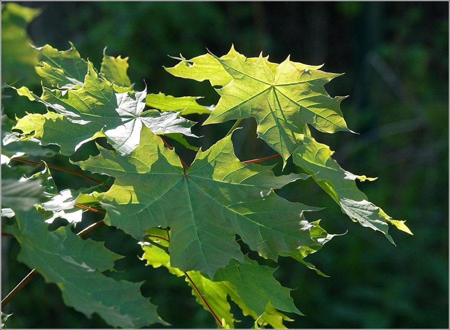
Sun leaves against the light (tree-gravity photo lYKGL…):
blades flat and level; some lobe tips and edges turn up (upper left, where the pale underside shows).
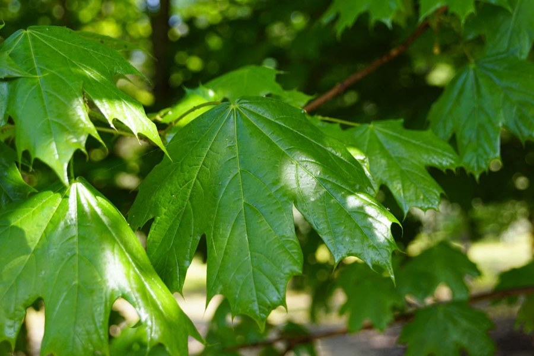
Shade leaves inside a crown (kk7lp…): large blades
tilted down steeply, each lobe folded down along its vein like a tent.
8J6fZ…: two leaves on long stalks that arch up and then
over, the blades flat.maple-leaf-backlit-summer: a leaf hanging from its stalk, flat,
lit through.V1gQc…, autumn: old leaves hang on their stalks, some
nearly upright, lobes curled.
What the photos say together: flat and level is common; cupped-up blades show in sun; drooping, tented blades show in shade and in
autumn. Photos can't tell which is more common where; the measurements below can, for tilt.
2. Which leaves sag: what the papers say
2.1 Blade tilt in Norway maple, by height and season (measured)
Raabe, Pisek, Sonnentag and Annuk 2015 photographed the tilt of
Norway maple blades (with a levelled camera, about 100 blades a sample) at the top, middle and bottom of open-grown trees at
Tõravere, Estonia, from May to September 2013. The values are public in
Chianucci et al. 2018 (138 species; the paper:
Ann. For. Sci. 75:50), which also holds an October 2011 sample from
Pisek et al. 2013. Kairi Adamson's (née Raabe)
2024 thesis sums up the 2015
paper: Norway maple "exhibited a strong planophile distribution throughout most of the growing season, with notable differences at
the canopy top during spring and autumn. The leaves emerged oriented downward and became more horizontally oriented when fully
expanded … The canopy remained planophile until late summer, when senescence begins at the canopy top, leading to a shift back to
plagiophile." Planophile means mostly level; plagiophile, mostly at 30-60°.
Norway maple, Tõravere
blades
median tilt
within 15°
within 30°
top, June and August
197
15°
50 %
86 %
middle, June and August
194
22°
30 %
67 %
bottom, June and August
182
23°
29 %
66 %
top, 15 May (unfolding)
101
38°
3 %
26 %
top, 13 September
100
22°
27 %
69 %
middle, 13 September
100
26°
23 %
63 %
bottom, 13 September
100
24°
26 %
65 %
whole crown, 11 October 2011
100
42°
7 %
25 %
For comparison in the same data: beech median 14°, sycamore 32°, field maple 51°, silver birch 58°. Norway maple is one of the
flattest. Computed by src/lia_stats.py and src/chart.py.
The top is the flattest in summer. This is the reverse of the usual rule (sun leaves steeper), which the same group found
in silver birch grown in a forest; they read Norway maple as a shade-tolerant species that keeps its leaves level everywhere.
Autumn steepens the top first. From August to September the top's median goes from 18° to 22° and the share within 15°
falls from 47 % to 27 %; the October 2011 sample has a median of 42°, 15 % past 60°. The thesis puts the autumn change down to
senescence; it adds that longer stalks and heavier, older blades steepen leaves late in summer (citing Gordon and Promnitz 1976, Hamerlynck and Knapp 1996).
Caveat: tilt is measured as if each blade were flat; it says nothing about curvature. The trees were open-grown, so
"top" is the sunniest; the sides of the crown were not measured apart.
2.2 Curved blades and light (other species)
Fleck, Niinemets, Cescatti and Tenhunen 2003 (beech, Fagus
sylvatica and F. orientalis): "the leaves were not entirely flat anywhere in the canopy"; the angle between the blade's
two halves went from 170° in the most shaded leaves to 90-100° at the top: sun leaves are folded far more, and both branch
and blade tilt rose with light. The abstract doesn't say which way the halves fold.
Chambelland et al. 2008 (young beech, laser-scanned): midrib curvature, twist and
curvature across the blade measured; "a more bent shape in well-lit leaves"; bent leaves caught 4-10 % less light than flat ones.
Niinemets and Fleck 2002 (tulip tree, beam theory): blade and stalk tilt
rose with light, but the blade's tilt followed the stalk's; stalks and blades got stiffer as their loads grew, "such that the lamina
vertical displacement was only weakly related to" light. Up to 30 % of a leaf's mass goes into its stalk and big veins to hold
the blade where it is.
Niinemets 1998 (aspen, small-leaved lime): differences in leaf tilt came
mainly from stalk length; the shade-tolerant lime kept blades more level.
Niinemets's 1996 thesis (Norway
maple saplings among others): shade leaves have less mass per area (thinner); Norway maple changes this least with light of the
species studied.
Water: Junttila et al. 2022 found branches lower and rise with the leaves'
water potential (R² 0.86 and 0.75 in two trees; up to 20 cm at night). Nothing found at the scale of a maple leaf.
2.3 What this means for the user's guess
Where there is no evidence. I found no study that measures the curvature (droop along the midrib, edges
curling, lobes bending, twist) of Norway maple blades by position in the crown, by light, or by water. No study separates the
crown's sides from its top. The upward cup is shown in photos and in beech (as folding), not measured in Norway maple.
Sagging at the crown's edge in summer: not supported. The sunniest blades (the top of open trees) are the flattest
measured; the shaded middle and bottom are steeper. Shade leaves are thinner and larger, and the shade photo above shows them
tented down, so more sag inside and low is the better guess, weakly supported.
In autumn: supported for the top. The top's blades steepen first as they age, and old leaves hang (photo above).
In the game's autumn tree the outer, upper leaves, which already turn colour first (add_cards's
twig_tint), should also be the steeper and the more bent.
Cupped or folded blades in sun: supported in beech (Fleck 2003, Chambelland 2008), seen in the sun photo, not measured
in Norway maple.
Most blades flat: supported. Norway maple is planophile; half the summer top blades are within 15° of level.
3. Leaves in plates at the shoot tips
Opposite pairs, each a quarter turn from the last (decussate), as all maples.
The lower leaf of a pair is larger and has the longer stalk.Weisse 1895,
"Zur Kenntniss der Anisophyllie von Acer platanoides", measured it on an old Norway maple in Berlin: on side shoots "the leaves
pointing down exceed the upper ones in size and weight, while the side ones lie between", and the lower leaves' stalks are often
also relatively longer. On level one-year twigs the stalks of a pair differed about 1:1.5 (up and down leaves) to 1:2-3 (the leaves
toward and away from the mother shoot; the outer one longer), the blades 1:1.1 to 1:2; the difference fades on older twigs. He
measured stalks from 42 to 230 mm. He cites Kerner's Pflanzenleben, which shows Norway maple as the example of a leaf mosaic,
and says the stalks' relative length is what builds the mosaic.
Long stalks make one layer. Niinemets (1996 thesis): Norway maple's stalks are 5-20 cm (pedunculate oak's 0.5-2 cm); "long
petioles allow considerable flexibility in horizontal arrangement of leaves", a "functional monolayer" (Horn 1971) whatever the point
of attachment.
Stalk length is how trees avoid shading their own leaves: Takenaka 1994, Yamada and Suzuki 1996, Takahashi and Mikami
2008 (in other species, as cited by Aoyagi, Nakabayashi and Yamada 2024, J Plant Res 137:203-213). I found no
measured mosaic of Norway maple beyond Weisse's ratios.
3.1 The prototype branch
A small branch (41 segments, 22 tips) grown by shoot.py: level annual shoots
forking in opposite pairs, side shoots lying flat, the buds above and below the shoot mostly asleep. Three leaf rules on the same
wood, autumn colours:
now: the game's add_cards: four pairs along each twig's outer four fifths, stalks rising, each blade turned
by a random ball of 0.9 about "out and up". 176 leaves.
tips, flat: only each tip's current shoot: the tip pair and one pair a quarter turn below; the lower leaf of a
pair larger (up to 1.22) on a longer stalk (up to 1.45), the outer of a side pair longer (1.15); blades level, tilted by a value
drawn from the measured September top-of-crown tilts; then the mosaic step: each blade turns about its node (at most 35°) and its
stalk changes (0.7-1.5 of its own) away from the blades it covers, the lower one moving more. 88 leaves.
Plan overlap 44 % before the mosaic step, 10 % after
(now: 74 %, measured the same way on blade discs).
tips, bent: the same, each blade bent by the rule in section 5 (here 41 flat, 19 cup up, 7 lobe tips, 7 sag + twist, 5 midrib droop, 9 edges down).
Photo, from below.
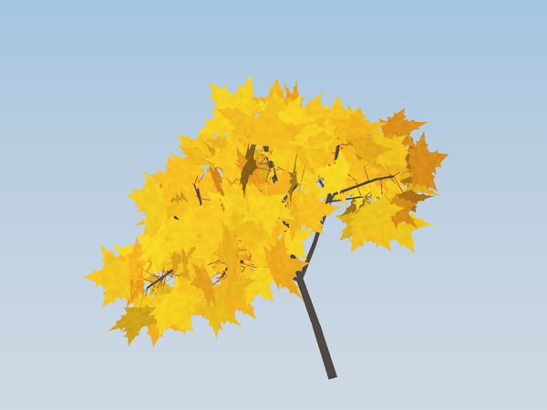
now, from below: a ball of leaves around every twig, no gaps.
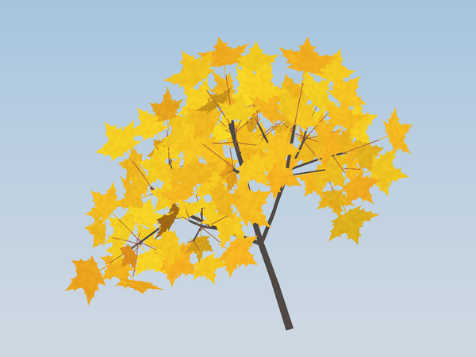
tips, flat: rosettes of four at the tips, sky between them.tips, bent: the same from below; the bends show only in the light.
Photo (made), from the side.
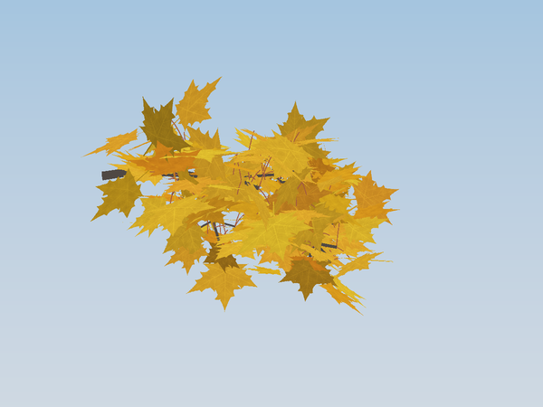
now, from the side: blades at all angles.
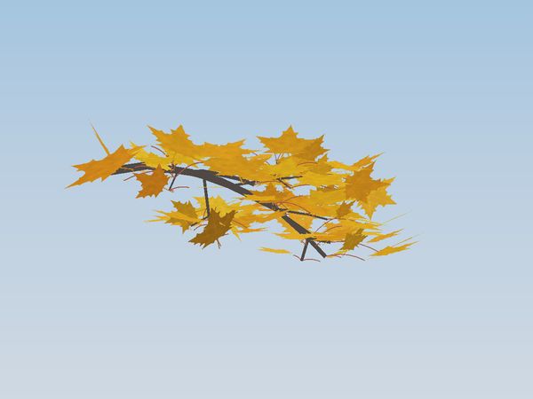
tips, flat: thin level plates.
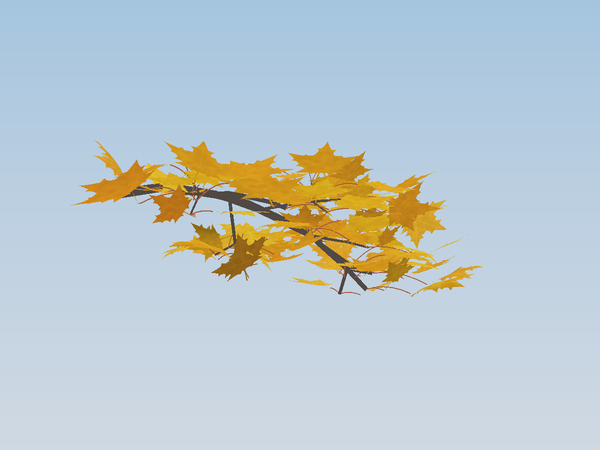
tips, bent: the plates break up a little; some blades droop.
Photo, against the light.
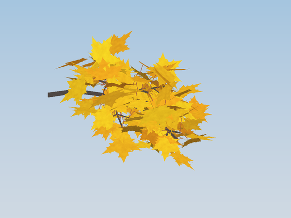
now, against the light.
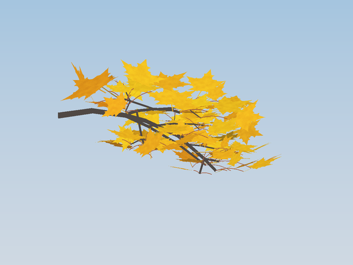
tips, flat.
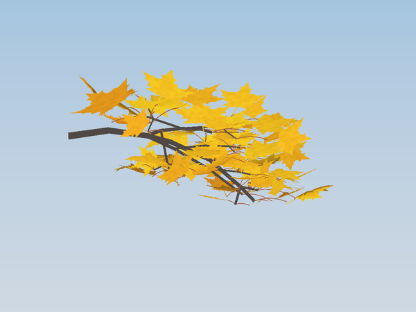
tips, bent.
3.2 One plate, close
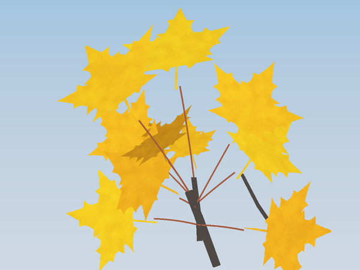
Flat, from below.
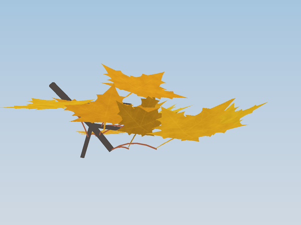
Flat, from the side and a little below.
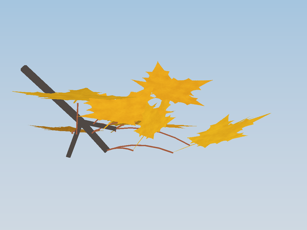
Flat, against the light.
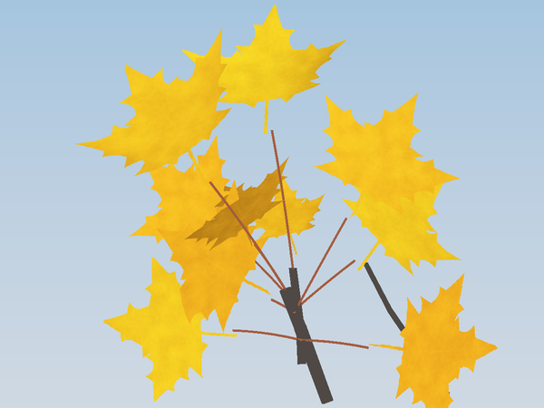
Bent, from below: nearly the same outline.
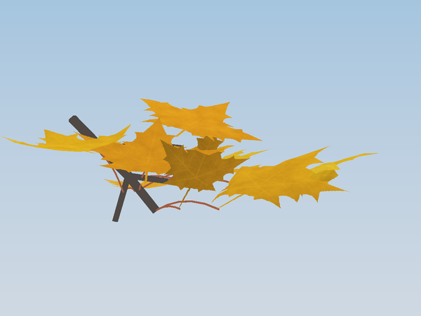
Bent, from the side: cups and droops break the level line.
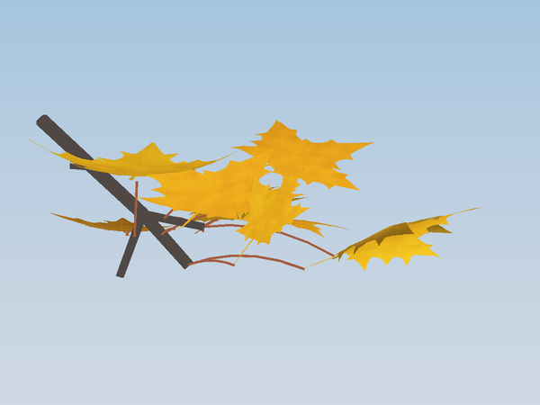
Bent, against the light: the light changes across each blade.
The prototype's wood is simple (grow_branch), not the branch work of ../branches/; only the leaves
are the point here. The stalks are drawn as curves that rise from the twig and arrive along the blade; the game draws only the
stalk's top on the card.
4. The bent leaves
A palmate leaf's main veins run out from the foot along five rays (the atlas puts them at 0°, ±56° and ±110°). So each
bend is one rule: every point lies on a ray from the foot, and each ray bends as an arc whose angle grows along it to a chosen angle
at the lobe's tip; each lobe has its own angle, and a ray between lobes blends theirs. A curl across each lobe's vein and a twist
about the midrib are added. Bending as arcs keeps lengths, so the outline doesn't stretch; the sinuses between lobes take up the
little stretch a cup would need. From leaf.py (angles at the lobe tips, middle, big lobes, small lobes):
Variant
lobe tips
starts
curl
twist
seen in
flat
0
most blades (Raabe 2015)
cup up
+14°, +20°, +22°
at the foot
+0.10 (edges up)
sun photo, AI branch; beech sun leaves
midrib droop
−38°, −12°, −4°
at the foot
hanging and old leaves
edges down
−10°, −28°, −34°
at the foot
−0.22 (tented lobes)
shade photo
lobe tips
−30°, −35°/−14°, −40°/−8°
55 % out
Tartu edge, AI branch
sag + twist
−30°, −24°/−30°, −30°/−26°
at the foot
−0.15
−22°
autumn leaves
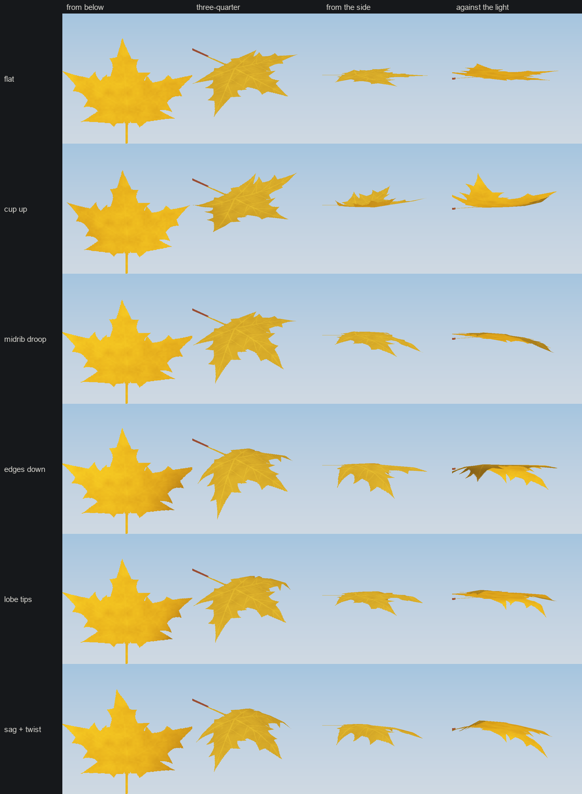
The variants on the game's leaf 1, gold, from below (lit through
by the sun above), three-quarter from above, from the side, and against the light. From below they all look alike: from the
windows, which look out and a little up, bending shows mostly as light changing across the blade and as blades breaking the level
line, not as a new outline.
4.1 Meshes
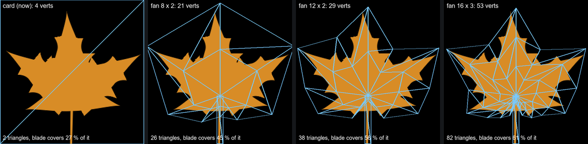
The game's card and three fans that hug the outline (one ray along
each lobe and one down the stalk, the widest gaps halved; rings out along the rays; a thin strip for the stalk's top). "Covers":
the share of the mesh the blade fills; the rest is cut by alpha and costs fragments for nothing. Averaged over the eight leaves:
card 27 %, fan 8 × 2: 45 %, 12 × 2: 53 %, 16 × 3: 58 %.
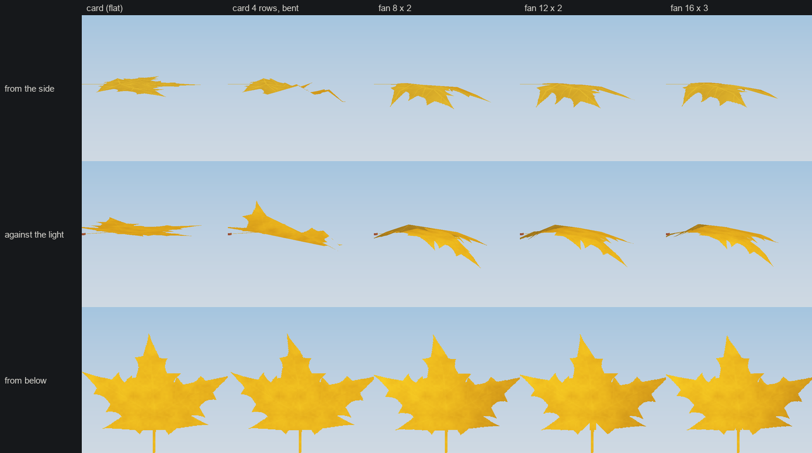
"sag + twist" on each mesh. The card cut in four rows (one at the foot)
can only bend along its midrib (the lobes' mean angle) and twist; the lower lobes stay in plane. Fan 8 × 2 already looks like the
finer fans at the window's distance.
5. Proposed way to draw them
Templates at startup. One fan mesh per tier (its vertices in the leaf's frame and their atlas texel), bent into K = 6
templates (the variants above at full amount), each vertex's offset and normal kept: 6 × 21 × 6 floats, about 3 KB, a uniform
buffer or constants in the shader. The index list is shared.
Per leaf, at growth (add_cards): a template, an amount 0..1 and a twist −1..1, packed with the atlas kind
into Card's face.w (kind 3 bits, template 3, amount 6, twist 6: 18 bits, exact in an f32). The card
stays 4 vec4s.
In TREE_LEAF_VERT: the vertex is mix(flat, template, amount), turned about the midrib by the
twist times its distance up the blade, then placed as now (across, along, face, size and
width); the normal is mixed the same way and normalized. Drawn with gfx::draw_indexed_instanced over the fan's indices
(the pieces already draw that way) in place of draw_instanced(6, …). TREE_FLUTTER turns the bent leaf
about its stalk as now; tree_leaf_move moves it by its middle as now.
The rule, per leaf, from the evidence:
Choice
Rule
Why
blade tilt
drawn from the measured histogram for its height in the crown (top, middle, bottom) and the season (summer,
September; October for late autumn), in place of today's roll_ball * 0.9
shade
leaves thinner and larger; old leaves steepen; photos
amount
0.3..1 at random, a few degrees of noise on every lobe, twist's sign at random
no two alike
"Exposure" and "shade" are what add_cards already has (outer, height_share,
deep); "autumn" follows the leaf's tint past gold.
The shadow (keep_leaf): a bent leaf's outline seen by the sun is a little shorter; each template's
foreshortening can scale tip and side. Small; optional. shaders/light.goose and
WIND_FN need no change.
5.1 Cost
About 26 500 leaves are drawn after culling (the dumps in ../branches/dump; MAX_CARDS is 160 000).
Tier
Mesh
vertices
triangles
blade covers
vertices a frame
triangles a frame
alpha-cut area against now
phone
card, flat (now)
4 (6 drawn)
2
27 %
159 k
53 k
1.0
standard (tablet)
card in 4 rows, midrib bend and twist
10
8
27 %
265 k
212 k
1.0
high
fan 8 × 2
21
26
45 %
557 k
689 k
0.6
(not needed)
fan 12 × 2
29
38
53 %
769 k
1.0 M
0.51
(not needed)
fan 16 × 3
53
82
58 %
1.4 M
2.2 M
0.46
Vertices a frame count each unique vertex once (indexed, with the post-transform cache). These are counts, not times: the tablet
is already at about 27-32 ms a frame with the tree, so the standard tier's change must be measured there before it is kept, and the
flat fan (no bend, fewer cut fragments) is worth timing on its own as a possible gain.
6. Open questions for the user
The data say the top's blades are the flattest in summer and the steepest in autumn. Which season is the game's tree, always
autumn, or does it follow --tree-tint? The tilt and sag rules follow that choice.
Task 117's criterion says "blades level and facing up within about 15°". Measured: half the summer top blades are within 15°,
86 % within 30°; in September only 27 % are within 15°. Change the criterion to "tilts drawn from the measured Norway maple
histogram by height and season"?
Should the inside of the crown (shade) sag more than the outside, as the shade photo and the thinner shade leaves suggest,
though nothing measures it in Norway maple?
Is the standard tier's midrib-only bend (card in 4 rows) worth its cost on the tablet, or should the tablet keep flat cards and
take only the new placement and tilts?
The mosaic step (blades nudged apart in plan) costs growth time: about n² per plate's neighbours. Keep it, or place by
Weisse's ratios alone (44 % overlap here, against 10 %)?
7. Sources
Raabe K, Pisek J, Sonnentag O, Annuk K (2015) Variations of leaf inclination angle distribution with height over the growing season and light exposure for eight broadleaf tree species. Agric For Meteorol 214-215:2-11. doi
Chianucci F, Pisek J, Raabe K, Marchino L, Ferrara C, Corona P (2018) A dataset of leaf inclination angles for temperate and boreal broadleaf woody species. Ann For Sci 75:50. doi, data (copied to src/lia-dataset_full.csv)
Pisek J, Sonnentag O, Richardson AD, Mõttus M (2013) Is the spherical leaf inclination angle distribution a valid assumption for temperate and boreal broadleaf tree species? Agric For Meteorol 169:186-194. doi
Adamson K (2024) Applicability of digital photography in monitoring changes of leaf inclination and foliage clumping with time. PhD thesis, University of Tartu. pdf
Fleck S, Niinemets Ü, Cescatti A, Tenhunen JD (2003) Three-dimensional lamina architecture alters light-harvesting efficiency in Fagus: a leaf-scale analysis. Tree Physiol 23:577-589. doi
Chambelland JC et al. (2008) A double-digitising method for building 3D virtual trees with non-planar leaves: application to the morphology and light-capture properties of young beech trees. Funct Plant Biol 35:1059-1069. doi
Niinemets Ü, Fleck S (2002) Petiole mechanics, leaf inclination, morphology, and investment in support in relation to light availability in the canopy of Liriodendron tulipifera. Oecologia 132:21-33. doi
Niinemets Ü (1998) Adjustment of foliage structure and function to a canopy light gradient in two co-existing deciduous trees. Variability in leaf inclination angles in relation to petiole morphology. Trees 12:446-451. doi
Niinemets Ü (1996) Importance of structural features of leaves and canopy in determining species shade-tolerance in temperate deciduous woody taxa. PhD thesis, University of Tartu. pdf
Weisse A (1895) Zur Kenntniss der Anisophyllie von Acer platanoides. Ber Dtsch Bot Ges 13:376-389. pdf
Junttila S et al. (2022) Tree water status affects tree branch position. Forests 13:728. doi
Louf JF et al. (2018) How wind drives the correlation between leaf shape and mechanical properties. Sci Rep 8:16314. doi (stalks bend about 4 times harder than they twist; not about droop)
The gravity brief in ../../tree-gravity/tree-gravity-brief.md (section 2) and Stava et al. 2014 (spkcmdb-ipmot-14.pdf, about branches, not leaves).